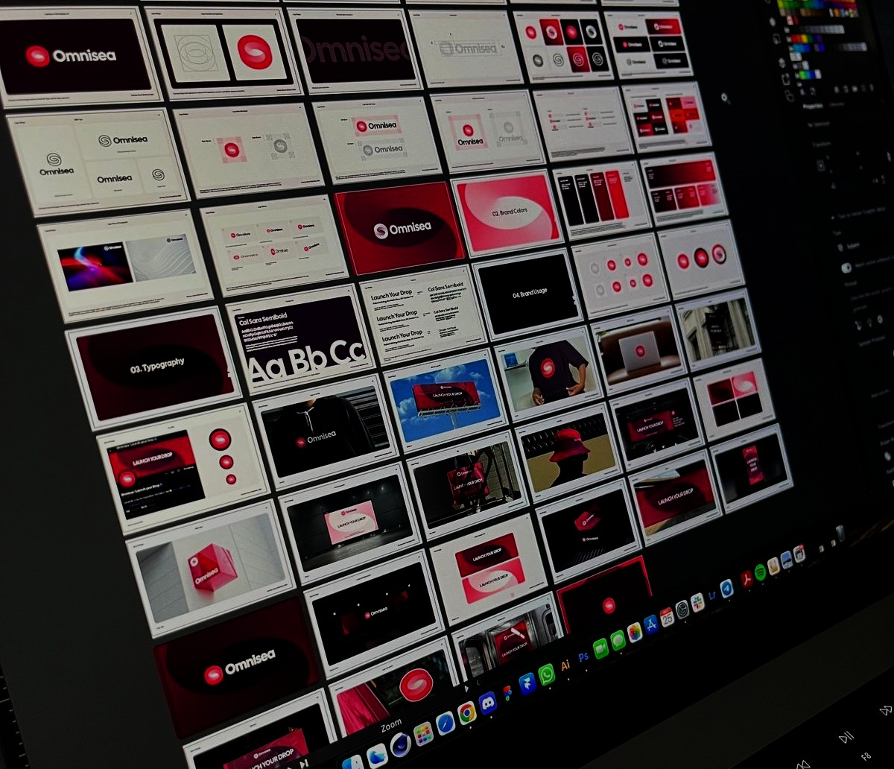
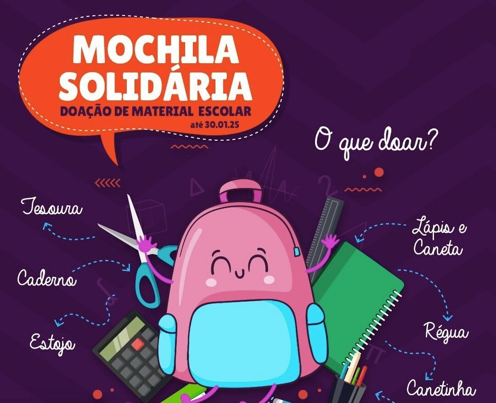
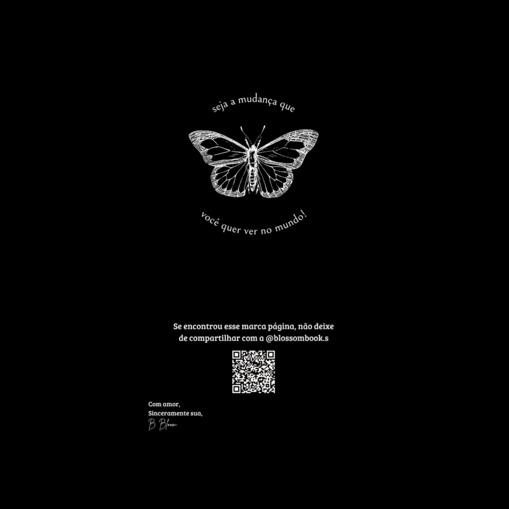
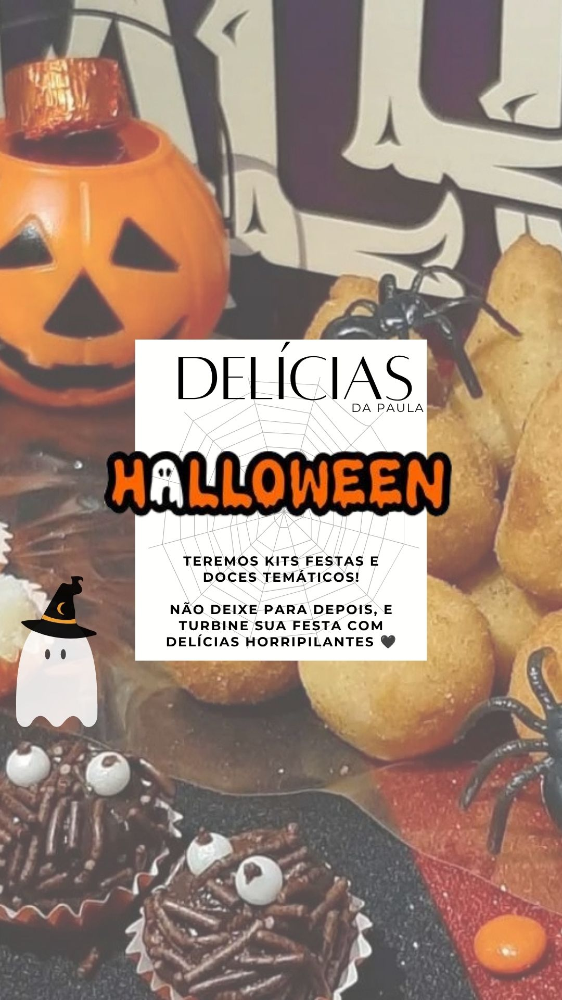
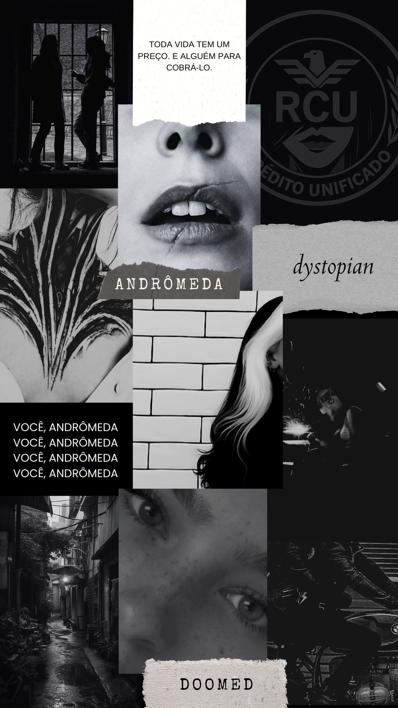

Descrição do projeto
Uma linguagem visual criada para cada propósito.
Uma coleção de projetos visuais desenvolvidos para diferentes contextos, unindo criatividade, estratégia e comunicação. Cada peça foi criada a partir da compreensão do objetivo de cada projeto, transformando ideias em soluções visuais capazes de transmitir mensagens, fortalecer identidades e gerar conexão com o público.
Objetivo
O processo começa com a compreensão do propósito do projeto, análise de referências e definição de elementos visuais como composição, tipografia, cores e linguagem estética. A partir desses direcionamentos, são criadas peças gráficas pensadas para diferentes formatos e plataformas, equilibrando criatividade, estratégia e funcionalidade.
Processo criativo
Desenvolvimento de materiais visuais alinhados à identidade de cada projeto, fortalecendo a comunicação e criando experiências mais marcantes para o público.




Resultados
As soluções visuais desenvolvidas contribuíram para transformar ideias em materiais de comunicação mais claros, atrativos e alinhados aos objetivos de cada projeto.